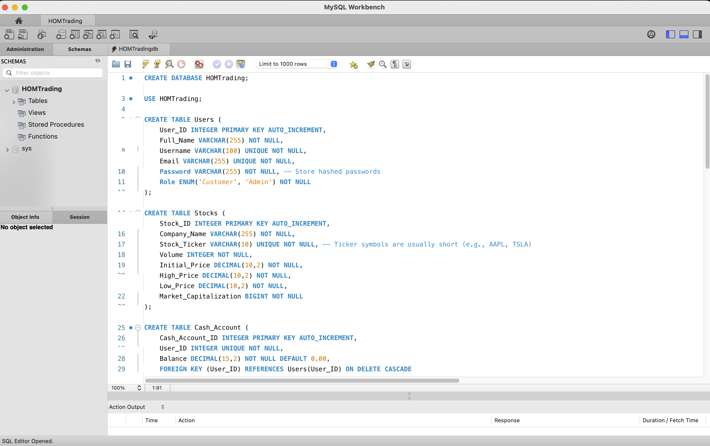
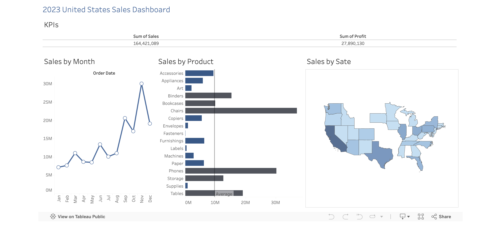
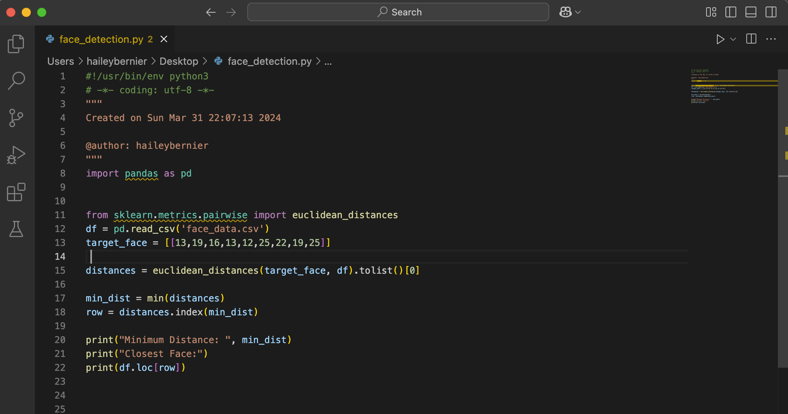

Engineered a relational database using MySQL for a stock trading platform,
optimizing data structure for efficient trade execution, portfolio tracking,
and user transactions. Deployed on AWS RDS for scalability and accessibility.


Designed and developed an interactive sales dashboard to visualize key sales metrics,
including monthly revenue trends, sales by product category,
and geographic performance across U.S. states. Utilized line charts, bar graphs,
and a geographic heat map for data-driven insights.

Developed a Python-based face similarity detection system that analyzes facial feature data
and calculates similarity using Euclidean distance. Implemented optimized data processing
techniques for accurate and efficient matching.